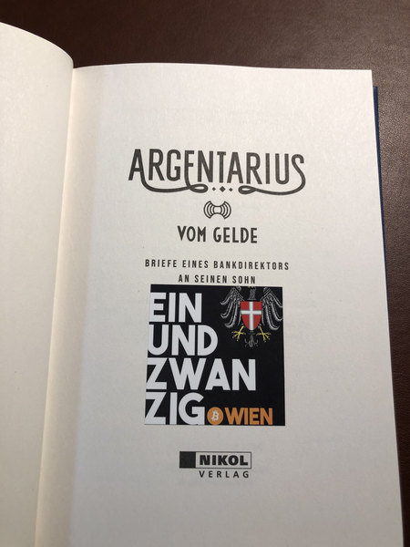

Argentarius goes public bookshelf
Long Story Short
Across the city of Vienna, one can find several public bookshelves, where people drop off interesting books for others. People lend books from there, read them, and usually return them. We are planning to place a few copies of Argentarius - a book frequently read by precoiners - at these bookshelves across our lovely city.

Support
If you feel like supporting this cause, feel free to send a few Sats to our »TIP JAR«.
Plebs together strong,
quillie.
last updated at 769739.